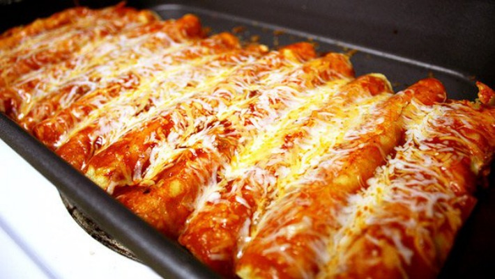

Enchiladas

This Mexican enchiladas recipe is the real thing. Corn tortillas are dipped in a homemade sauce, fried, filled with Mexican queso fresco, then topped with sour cream, lettuce, and tomato.
My mother-in-law is from Mexico and taught me to make this delicious dish. Serve with traditional refried beans. It has a taste different from the norm — so good!
Ingredients
- 6 dried chile de arbol peppers
- 3/4 cup water, or as needed
- 1 clove garlic
- 1 teaspoon salt
- 1 cup vegetable oil for frying
- 18(6 inch) corn tortillas
- 3 cups crumbled queso freso, divided
Steps
- Snap tops off of dried chiles and place in a saucepan with enough water to cover. Bring to a boil and simmer for 15 minutes. Drain water and place chiles into a food processor or blender with garlic and salt. Purée until smooth. Press sauce through a strainer and set aside.
- Heat oil in a large skillet over medium heat. Soak each tortilla in the sauce, then place in the hot oil. Turn over almost immediately and fry for about 5 seconds on the other side. Remove to a plate that is lined with paper towels, stacking them on top of each other to keep them pliable for filling.
- Take one fried tortilla at a time and fill with about 2 tablespoons queso fresco. Roll up and place seam side down on a plate. Place three of these on each plate.
- Top tortillas in the following order: Start with a layer of sour cream, then a small handful of lettuce, three tomato slices, 2 more tablespoons queso fresco, and 1 tablespoon green onions.
home